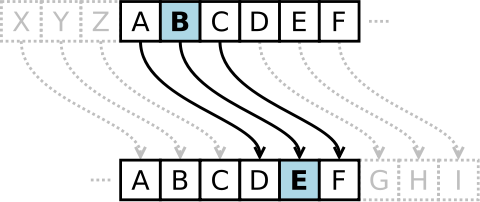
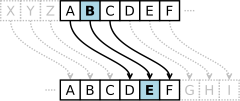

Category Of encryption
SEZAR
VERNAM
VIJINER
Caesar ciphri (lot. Notae Caesarianae), shuningdek, o'zgaruvchan
ciphr yoki Caesar kodi deb ataladigan bir almashtirish ciphri turi,
bu erda ochiq matnda har bir belgi, o'z alifbosidagi bir nechta
o'rnadan chap yoki o'ngga bir qadamda joylashgan belgisi bilan
almashtiriladi masalan, 3 qadamda o'ngga surilgan ciphrda, A dan
B ga, B dan D ga o'tiladi va hokazo. Ciphr, Rima imperatorlari Gaiy
Yuliy Tsezari tomonidan uning vazifadorlariga sirli muloqot uchun
ishlatilganligi sababli Tsezar kodi sifatida nomlangan. Tsezar kodi
tomonidan bajariladigan almashtirish qadamini o'z ichiga olgan
usullar, masalan, Vizhener ciphri, qo'shimcha qismlar sifatida
qo'llaniladi va hali ham ROT13 tizimida zamonaviy ilovalarida
qo'llaniladi. Tsezar kodi, monoalfavit ciphrlar kabi, oson sarflanadi
va amaliyotda ancha ma'nosizdir. Biroq, u eng oddiy va eng mashhur
shifrlash usullaridan biri sifatida hisoblanadi.


Kriptosistema telegramma xabarlarni shifrlash uchun taklif qilindi, ular
binar matnlardan iborat bo'lib, bu matnda ochiq matn Bodo kodi (besh xonali
"impulslar kombinatsiyalari" ko'rinishida) shaklida ifodalangan edi. Ushbu
koddagi, misol uchun, "A" harfi (1 1 0 0 0) ko'rinishida edi. Bu koddagi,
masalan, "1" raqamiga joylashgan joy, "0" raqamiga esa yo'qotishni
ifodalaydigan joy bo'lishi mumkin edi. Maxfiy kalitning o'zi shunchaki shu
alifboning xaosli harflar to'plamini ifodalash kerak edi.
Shifrlangan matn ochiq matn bilan "xor" amali orqali birlashtiriladi, bu amalda maxfiy kalitni bilan. Masalan, kalit (1 1 1 0 1) bilan "A" harfini (1 1 0 0 0) qo'llab-quvvatlashda shifrlangan xabar (0 0 1 0 1) hosil qilinadi: (1 1 0 0 0) ⊕ (1 1 1 0 1) = (0 0 1 0 1). Qabul qilingan xabarning kaliti (1 1 1 0 1) bo'lganini bilib, boshlang'ich xabarni shu o'zgartirilgan amali orqali olish oson: (0 0 1 0 1) ⊕ (1 1 1 0 1) = (1 1 0 0 0). Mutlaq kriptografiya bo'yicha qatiy mustahkamlik uchun kalitning uchta kritik muhim xususiyati bo'lishi kerak.
Hamda, "Vername" modul m bo'yicha nomlangan shifr ham yaxshi bilinadi, bu erda ochiq matn, shifrlangan matn va kalitning belgilari Zm qo'llanma ichidagi qiymatlar bo'lishi mumkin. Shifr, aslida, m=2 uchun bo'lgan boshlang'ich Vername shifrining umumiylashtirilgan versiyasidir.
Masalan, m=26 (A=0, B=1,..., Z=25) bo'yicha Vername shifri bilan kodlash:

Shifrlangan matn ochiq matn bilan "xor" amali orqali birlashtiriladi, bu amalda maxfiy kalitni bilan. Masalan, kalit (1 1 1 0 1) bilan "A" harfini (1 1 0 0 0) qo'llab-quvvatlashda shifrlangan xabar (0 0 1 0 1) hosil qilinadi: (1 1 0 0 0) ⊕ (1 1 1 0 1) = (0 0 1 0 1). Qabul qilingan xabarning kaliti (1 1 1 0 1) bo'lganini bilib, boshlang'ich xabarni shu o'zgartirilgan amali orqali olish oson: (0 0 1 0 1) ⊕ (1 1 1 0 1) = (1 1 0 0 0). Mutlaq kriptografiya bo'yicha qatiy mustahkamlik uchun kalitning uchta kritik muhim xususiyati bo'lishi kerak.
Hamda, "Vername" modul m bo'yicha nomlangan shifr ham yaxshi bilinadi, bu erda ochiq matn, shifrlangan matn va kalitning belgilari Zm qo'llanma ichidagi qiymatlar bo'lishi mumkin. Shifr, aslida, m=2 uchun bo'lgan boshlang'ich Vername shifrining umumiylashtirilgan versiyasidir.
Masalan, m=26 (A=0, B=1,..., Z=25) bo'yicha Vername shifri bilan kodlash:
Tsеzar shifrida har bir alifbo harfi bir nechta pozitsiyaga o'zgarmoqda; masalan,
Tsеzar shifrida +3 o'zgarmoq bilan, A dan B ga, B dan E ga o'giriladi va hokazo.
Vizhener shifri bir nechta Tsеzar shifrlari ketma-ketligidan iborat. Shifrlash
uchun "tabula recta" yoki Vizhener kvadrati deb ataladigan alifbo jadvali
ishlatilishi mumkin. Lotin alifbosiga tegishli bo'lsa, Vizhener jadvali har biri
26 belgili qatorlardan iborat bo'ladi, va har bir keyingi qator bir nechta
pozitsiyaga o'zgargan bo'ladi. Shunday qilib, jadvalda 26 ta turli Tsеzar shifri
hosil bo'ladi. Har bir shifrlash bosqichida kalit so'z belgisiga bog'liq turli
alifbotlardan foydalaniladi. Masalan, asosiy matn quyidagi ko'rinishda bo'lsa:
ATTACKATDAWN
Xabar jo'natuvchisi matnni yuborish uchun kalit so'zni ("LEMON") dengizlangan ravishda yozadi, keyin ularni sinchik sinab ko'rish jarayonida sinab ko'radigan vaqtgacha uzaytiradi, kuniga boshlab orqaga qaytib keladi, toki undan so'ng uning uzunligi boshlang'ich matn uzunligiga teng bo'lmasa.
LEMONLEMONLE
Birinchi harf asosiy matnning («A») belgisi L ketma-ketligi bilan shifrlanadi, bu esa kalitning birinchi belgisi bo'ladi. Shifrlangan matnning birinchi belgisi («L») Vizhener jadvalidagi L qatori va A ustunining kesishma nuqtasida joylashadi. Ushbu usulni ikkinchi belgining matn uchun ham qo'llaydigan emas, balki ikkinchi belgining shifrlangan matndagi birinchi belgisini olish uchun ham qo'llaniladi; ya'ni ikkinchi belgining shifrlangan matning ikkinchi belgisi («X») T ustuniga E qatorining kesishma nuqtasida joylashadi. Qolgan asosiy matnning qismi ham shunday bir usul bilan shifrlanadi.
ATTACKATDAWN
Xabar jo'natuvchisi matnni yuborish uchun kalit so'zni ("LEMON") dengizlangan ravishda yozadi, keyin ularni sinchik sinab ko'rish jarayonida sinab ko'radigan vaqtgacha uzaytiradi, kuniga boshlab orqaga qaytib keladi, toki undan so'ng uning uzunligi boshlang'ich matn uzunligiga teng bo'lmasa.
LEMONLEMONLE
Birinchi harf asosiy matnning («A») belgisi L ketma-ketligi bilan shifrlanadi, bu esa kalitning birinchi belgisi bo'ladi. Shifrlangan matnning birinchi belgisi («L») Vizhener jadvalidagi L qatori va A ustunining kesishma nuqtasida joylashadi. Ushbu usulni ikkinchi belgining matn uchun ham qo'llaydigan emas, balki ikkinchi belgining shifrlangan matndagi birinchi belgisini olish uchun ham qo'llaniladi; ya'ni ikkinchi belgining shifrlangan matning ikkinchi belgisi («X») T ustuniga E qatorining kesishma nuqtasida joylashadi. Qolgan asosiy matnning qismi ham shunday bir usul bilan shifrlanadi.